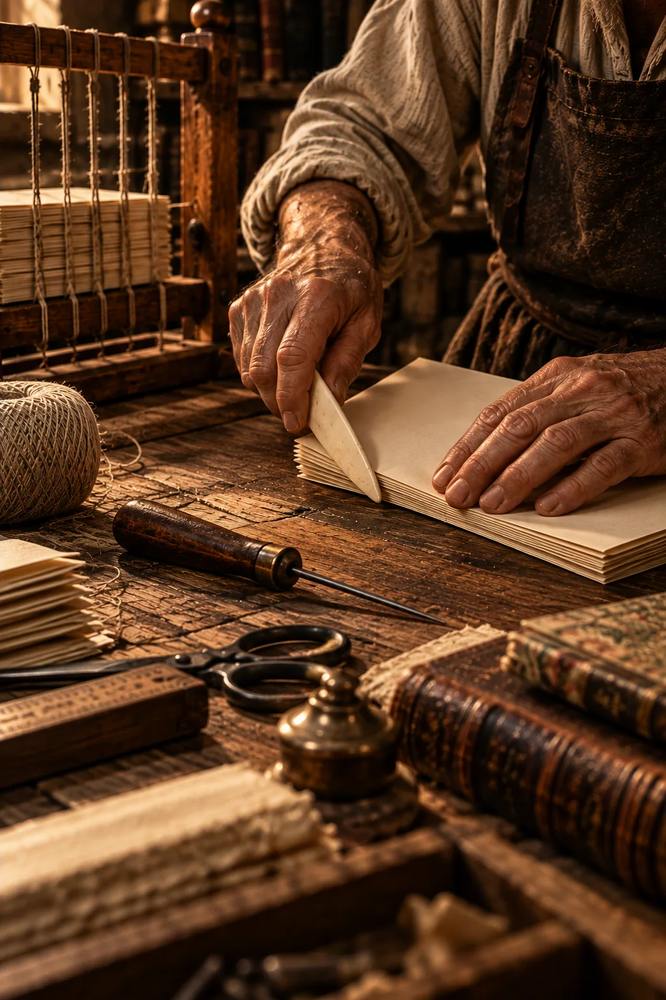

El arte de hacer libros
Un libro comienza mucho antes de que alguien escriba su primera palabra. Y termina de nacer cuando otras manos lo abren.
Las manos que guardan las historias
Sobre una mesa de madera, un artesano sostiene un cuadernillo de papel. Sus manos están marcadas por los años. Con una de ellas mantiene las hojas alineadas; con la otra desliza una pequeña herramienta de superficie lisa sobre el doblez.
El movimiento es sencillo. No hay máquinas ruidosas ni grandes mecanismos. Apenas la presión de una mano experimentada, el roce de la herramienta contra el papel y una línea que queda cuidadosamente marcada.
La herramienta se llama plegadera.
A su alrededor descansan agujas, hilos, reglas, cuchillas y pequeños montones de papel. Detrás de él, un telar de encuadernación espera los cuadernillos que serán cosidos para formar un libro.
Quizás el artesano haya repetido aquel movimiento miles de veces. Quizás haya aprendido observando a alguien que, muchos años antes, también trabajaba frente a una mesa semejante.
Lo que sostiene entre sus manos todavía no es un libro. Son apenas unas hojas.
Pero está comenzando a convertirse en uno.
La historia del libro suele contarse a través de grandes nombres: escritores, inventores, impresores, editores. Sin embargo, detrás de cada transformación importante hubo también innumerables personas cuyo trabajo rara vez quedó registrado.
Copistas que pasaron años inclinados sobre pergaminos. Artesanos que prepararon tintas. Iluminadores que llenaron los márgenes de criaturas fantásticas. Fundidores que fabricaron tipos metálicos. Impresores que ajustaron prensas. Encuadernadores que cosieron páginas para que permanecieran juntas.
La historia de los libros también es la historia de esas manos.

Antes de que existieran los libros
Durante miles de años, las sociedades humanas buscaron maneras de conservar aquello que no querían olvidar.
La piedra recibió inscripciones. La arcilla guardó signos trazados antes de endurecerse. El papiro permitió elaborar largos rollos escritos. Las tablillas de madera y cera ofrecieron superficies reutilizables. Más tarde, el pergamino proporcionó un soporte resistente, capaz de recibir escritura por ambas caras.
Pero ninguno de esos materiales determinaba por sí solo la forma que tendría un libro.
En buena parte del mundo mediterráneo antiguo, los textos circulaban frecuentemente en rollos. Leer implicaba desenrollar una superficie escrita y recogerla progresivamente mientras avanzaba la lectura.
Era una solución ingeniosa, aunque presentaba dificultades. Consultar un pasaje determinado podía exigir recorrer buena parte del rollo. Comparar fragmentos alejados entre sí resultaba incómodo. Y escribir en ambas caras no siempre era práctico.
Con el tiempo comenzó a difundirse otra forma de reunir los textos: hojas dobladas, agrupadas y unidas por uno de sus bordes.
Había nacido el códice.
Su adopción fue gradual y convivió durante siglos con los rollos. Sin embargo, sus ventajas terminaron transformando la experiencia de lectura.
El códice permitía abrir una obra en diferentes lugares, consultar pasajes con mayor facilidad, aprovechar ambas caras de las hojas y reunir grandes cantidades de escritura en un objeto relativamente compacto.
También introdujo algo que hoy nos parece completamente natural: la posibilidad de pasar una página.
Aquel gesto cotidiano representó una transformación extraordinaria en nuestra relación con los textos.
Cuando cada libro era irrepetible
Durante buena parte de la Edad Media europea, producir un libro significaba fabricarlo individualmente.
En monasterios, talleres urbanos y otros centros de producción manuscrita, los copistas trasladaban los textos a nuevas superficies. Algunos trabajaban por encargo; otros participaban en la conservación y circulación de obras religiosas, jurídicas, científicas o literarias.
Copiar un manuscrito extenso podía exigir meses de trabajo.
Había que preparar el soporte, organizar la superficie escrita, trazar líneas de guía, calcular espacios y distribuir cuidadosamente el texto. Un error podía requerir una corrección laboriosa.
Y la escritura era apenas una parte del proceso.
Los manuscritos más elaborados incorporaban iniciales ornamentadas, ilustraciones, pigmentos costosos y aplicaciones de oro. En ocasiones, sus márgenes se poblaban de animales imaginarios, figuras humanas, plantas y escenas que dialogaban con el contenido.
La iluminación no era simplemente un adorno. Podía organizar la lectura, destacar pasajes, expresar jerarquías y convertir el manuscrito en un objeto de representación cultural.
Después llegaba la encuadernación.
Los cuadernillos se cosían, se protegían con cubiertas y, según el lugar, la época y el destino de la obra, podían recibir revestimientos de cuero, madera, telas o elementos metálicos.
Cada ejemplar era el resultado de múltiples decisiones.
Dos copias de una misma obra podían presentar diferencias de escritura, ornamentación, organización e incluso contenido.
Por eso los manuscritos antiguos no son únicamente recipientes de textos. Son testimonios materiales de las personas y las comunidades que los produjeron.
Un libro podía ser leído, heredado, corregido, anotado, reparado y vuelto a encuadernar.
Su historia continuaba mucho después de haber sido escrito.
La revolución que no comenzó con Gutenberg
Cuando pensamos en la invención de la imprenta, suele aparecer inmediatamente el nombre de Johannes Gutenberg.
Y con razón: el sistema de impresión con tipos móviles metálicos desarrollado en la Europa del siglo XV produjo una transformación profunda en la fabricación y circulación de libros.
Pero la historia de la impresión es mucho más antigua y geográficamente amplia.
En Asia oriental se utilizaron técnicas de impresión mediante bloques de madera muchos siglos antes. En China también se desarrollaron sistemas de tipos móviles, entre ellos los realizados con materiales cerámicos durante el siglo XI. En Corea se emplearon tipos metálicos antes de la época de Gutenberg.
La innovación europea no surgió, por tanto, en un mundo que desconociera por completo la reproducción mecánica de textos.
Su importancia estuvo en la integración eficaz de diversos elementos: tipos metálicos reutilizables, procedimientos de composición, tintas adecuadas y mecanismos de presión capaces de producir numerosas impresiones.
En la Europa de mediados del siglo XV, aquella combinación permitió multiplicar la producción de libros.
Un texto ya no necesitaba ser copiado íntegramente a mano para obtener nuevos ejemplares.
La transformación fue enorme, aunque no inmediata.
Los primeros libros impresos conservaron muchas características visuales de los manuscritos: tipos que imitaban escrituras conocidas, espacios reservados para iniciales ornamentadas y composiciones que respondían a tradiciones anteriores.
La imprenta no borró de un golpe el mundo manuscrito.
Durante un tiempo, ambos convivieron y se influyeron mutuamente.
La historia del libro rara vez avanza mediante rupturas absolutas. Con frecuencia, una técnica nueva conserva algo de las manos que trabajaron antes.
El papel: una materia que también tiene historia
El papel parece tan cotidiano que resulta fácil olvidar su extraordinaria trayectoria.
Su desarrollo histórico está estrechamente vinculado con China, desde donde las técnicas de fabricación se difundieron gradualmente hacia otras regiones de Asia y, posteriormente, al mundo islámico y Europa.
A diferencia del pergamino, elaborado a partir de pieles animales, el papel podía producirse mediante fibras vegetales y textiles sometidas a distintos procesos de preparación.
Con el tiempo, su fabricación se transformó en una actividad artesanal e industrial de enorme importancia.
Los molinos papeleros, los moldes, las prensas y los procedimientos de secado permitieron obtener hojas destinadas a la escritura y la impresión.
Pero no todos los papeles eran iguales.
Su textura, espesor, flexibilidad, color y resistencia influían directamente en el resultado de un libro.
Un papel demasiado delgado podía transparentar la impresión. Uno excesivamente rígido podía dificultar el paso de las páginas. Una superficie muy absorbente modificaba el comportamiento de la tinta.
Incluso hoy, cuando buena parte de la producción editorial utiliza tecnologías digitales, elegir el papel sigue siendo una decisión fundamental.
No se trata únicamente de determinar cuánto costará imprimir.
Se trata de decidir cómo se sentirá el libro entre las manos, cómo recibirá la luz, cómo se abrirá y cómo envejecerá.
Porque el papel no es un soporte invisible.
También participa de la lectura.
El pequeño instrumento que ayuda a construir un libro
Entre las herramientas tradicionales del encuadernador existe una particularmente sencilla.
No tiene mecanismos complejos. No necesita electricidad. No imprime, no corta ni cose.
Es una pieza alargada, lisa y resistente, que puede fabricarse con hueso, madera u otros materiales adecuados.
Su nombre es plegadera.
Su función más reconocible consiste en marcar y asentar los dobleces del papel, aplicando una presión controlada sobre la línea del pliegue.
Cuando una hoja debe doblarse con precisión, la plegadera ayuda a conseguir un borde limpio y definido. También puede emplearse en otras operaciones de encuadernación, siempre procurando no dañar las superficies.
Su apariencia discreta contrasta con la importancia del gesto que permite realizar.
Una hoja doblada se transforma en un bifolio. Varios bifolios pueden reunirse para formar un cuadernillo. Y una sucesión de cuadernillos, correctamente organizada y unida, puede convertirse en el cuerpo de un libro.
El pliegue es uno de los primeros pasos de esa transformación.
En el trabajo artesanal, la precisión de cada doblez influye en la alineación posterior de las páginas.
Un pequeño error puede multiplicarse cuando se reúnen varios cuadernillos.
Por eso una herramienta tan sencilla continúa teniendo valor incluso en talleres que disponen de tecnologías modernas.
La plegadera recuerda algo esencial: la calidad de un libro también depende de gestos mínimos, repetidos con paciencia.
El hilo que mantiene unidas las palabras
Una vez preparados los cuadernillos, llega otro momento decisivo: reunirlos.
En numerosos sistemas tradicionales de encuadernación, los cuadernillos se cosen mediante hilo, siguiendo una secuencia que permite mantenerlos unidos y dar flexibilidad al conjunto.
Para ciertas técnicas se utiliza un telar de encuadernación, una estructura que ayuda a mantener tensos los soportes sobre los cuales se realiza la costura.
El trabajo exige atención.
Cada puntada debe contribuir a formar un cuerpo estable, capaz de abrirse sin que las páginas se desprendan.
Después pueden venir el encolado, la preparación del lomo, la colocación de refuerzos, las guardas y la construcción de la cubierta.
No existe una única manera de encuadernar.
A lo largo de la historia se han desarrollado numerosos procedimientos, adaptados a distintos materiales, usos y posibilidades técnicas.
Algunos privilegian la resistencia. Otros facilitan una apertura amplia. Otros responden a necesidades de producción rápida o económica.
La encuadernación industrial ha permitido fabricar libros en cantidades que los antiguos talleres difícilmente habrían imaginado.
Sin embargo, los principios fundamentales continúan siendo reconocibles: reunir páginas, mantener su orden, protegerlas y permitir que alguien pueda leerlas.
Un libro es, entre otras cosas, una solución extraordinariamente ingeniosa al problema de mantener juntas las palabras.
La belleza que también se lee
Un libro puede contener un texto magnífico y, sin embargo, resultar incómodo de leer.
Una tipografía demasiado pequeña, márgenes insuficientes, líneas excesivamente largas o una composición descuidada pueden convertir la lectura en una tarea fatigosa.
Por eso el diseño editorial no consiste solamente en hacer que una página se vea bonita.
Consiste en organizar visualmente el contenido para facilitar su comprensión.
La elección tipográfica, el interlineado, la longitud de las líneas, los espacios en blanco y la jerarquía de los títulos intervienen constantemente en nuestra relación con el texto.
Muchas veces no somos conscientes de esas decisiones.
Y quizás allí resida una de las virtudes del buen diseño: permitir que el lector avance sin tropezar con la forma que sostiene las palabras.
Las ilustraciones también pueden desempeñar un papel fundamental.
No siempre están destinadas a repetir aquello que el texto describe. A veces crean una atmósfera, ofrecen una interpretación, sitúan históricamente una escena o permiten detenerse en un momento significativo.
Una imagen puede convertirse en una pausa dentro de la lectura.
Y esa pausa también forma parte de la experiencia literaria.
Un oficio antiguo en un mundo digital
Hoy podemos escribir, diseñar, corregir y publicar utilizando herramientas que habrían resultado inimaginables para un impresor del siglo XV.
Los archivos digitales permiten reorganizar una obra, corregir errores y preparar versiones destinadas a diferentes formatos.
La impresión digital hace posibles tiradas pequeñas e incluso la fabricación de ejemplares individuales.
Los libros electrónicos permiten transportar bibliotecas enteras en un dispositivo.
Nada de esto vuelve innecesario el trabajo editorial.
Por el contrario, multiplica las decisiones que deben tomarse.
Un texto puede publicarse rápidamente, pero la velocidad no garantiza su calidad.
Continúa siendo necesario revisar, corregir, investigar, diseñar, comprobar y preguntarse constantemente cómo recibirá el lector aquello que estamos preparando.
También sigue existiendo una diferencia entre disponer de un archivo y tener un libro terminado.
Cuando una publicación pasa del diseño digital al papel aparecen preguntas nuevas.
¿Se leen correctamente las letras? ¿Las ilustraciones conservan sus detalles? ¿Los márgenes funcionan después del corte? ¿La cubierta protege el interior? ¿El volumen puede abrirse cómodamente?
La prueba impresa revela aspectos que ninguna pantalla reproduce completamente.
Y entonces vuelve a aparecer el artesano.
Quizás ya no trabaje en un taller iluminado por velas. Quizás tenga una impresora láser junto a su mesa y utilice programas digitales para componer las páginas.
Pero todavía debe observar el papel, preparar los cuadernillos, comprobar los dobleces y decidir cómo unirlos.
Las herramientas cambian.
La necesidad de cuidar el trabajo permanece.
Por qué nos llamamos Plegadera
Cuando elegimos el nombre Plegadera Ediciones, no buscamos una palabra grandilocuente.
Elegimos el nombre de una herramienta.
Una de esas herramientas que rara vez aparecen en las fotografías de los grandes escritores o en las historias de las editoriales famosas.
La plegadera no crea personajes, no inventa argumentos ni escribe versos.
Pero participa en el proceso que permite transformar las palabras en un objeto que alguien podrá sostener, abrir, conservar y compartir.
En esa pequeña herramienta encontramos una manera de comprender nuestro trabajo.
Creemos que editar un libro implica mucho más que reproducir un texto.
Significa respetar la obra, investigar su contexto, cuidar su presentación y ofrecer al lector una experiencia que haga justicia a aquello que tiene entre sus manos.
Por eso nos interesan los clásicos que continúan hablando después de siglos, las historias que conservan la memoria de un territorio, las tradiciones que merecen ser estudiadas y las obras que invitan a descubrir otros mundos.
Cada publicación presenta desafíos diferentes.
Pero todas comparten una misma convicción: los libros merecen ser hechos con cuidado.
No porque deban convertirse necesariamente en objetos lujosos, sino porque las palabras, las imágenes y los lectores merecen atención.
Lo que permanece entre las manos
Volvamos por un momento al taller.
El artesano ha terminado de plegar sus hojas.
Las reúne, comprueba su alineación y las deja sobre la mesa junto a otros cuadernillos.
Más tarde alguien los coserá, preparará el lomo y colocará una cubierta.
Quizás el libro viaje a otra ciudad. Quizás permanezca durante años en una biblioteca. Quizás pase de una generación a otra.
Su destino todavía es desconocido.
Pero algo extraordinario ya ha ocurrido.
Un conjunto de hojas se ha convertido en el principio de una historia que podrá ser compartida.
Durante siglos hemos cambiado los materiales, las técnicas y las máquinas con las que fabricamos libros.
Sin embargo, todavía reconocemos aquel gesto antiguo: abrir un volumen y encontrarnos con las palabras de alguien que quizás vivió en otro lugar, en otra época o bajo un cielo completamente distinto.
Entre el autor y el lector existe un puente construido con lenguaje, memoria y trabajo.
Y en algún lugar de ese puente, casi invisible, permanece la huella de unas manos que doblaron cuidadosamente una hoja.
Dentro de las páginas es el espacio editorial y cultural de Plegadera Ediciones: una invitación a descubrir las épocas, ideas, símbolos y personas que existen detrás de los libros que publicamos.
Porque algunas historias no terminan en la última página.
Conoce nuestro catálogo de publicaciones.